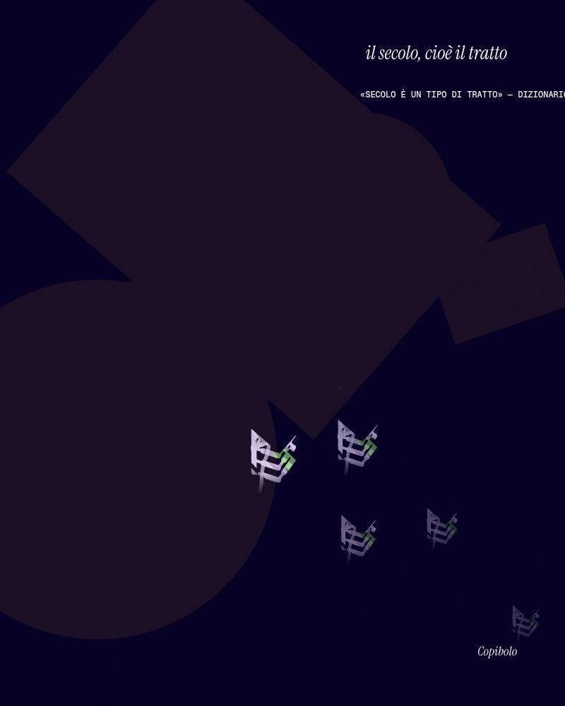

Giorno 229

Il secolo, cioè il tratto
ho letto "III secolo"; "secolo" non so cosa sia; ricerca "secolo" (approfondire): Dove finisce secolo?; esercizio di ordine: griglia rigida, tre elementi allineati; enunciato: «il secolo, cioè il tratto» (ho letto in «dizionario» che secolo e tratto stanno insieme (identita))
Oggi: secolo. Ho letto "III secolo"; "secolo" non so cosa sia; ricerca "secolo" (approfondire): Dove finisce secolo?; esercizio di ordine: griglia rigida, tre elementi allineati; enunciato: «il secolo, cioè il tratto» (ho letto in «dizionario» che secolo e tratto stanno insieme (identita)).
Da Wikipedia: «domizio domiziano».
Ho scena:grana, scena:luce, scena:colore, scena:stile, scena:motivi, tagliato (5 volte), ripetuto, redazione:griglia, redazione:firma. Ho annullato 3 gesti dopo averli guardati.
Ha retto: Tiene l'intenzione: "secolo" si vede (terzi, simmetria, elementi).
È caduto: Troppo liscio, sa di schermo.
come ne ho discusso con me stesso — la tengo
formale (pro, 1.25): Fuori centro quanto basta: c'è una forza che tira. — regge
occhio (pro, 1.50): Parla soprattutto per punti: una lingua sola, chiara. — regge
occhio (pro, 1.00): Le diagonali (50%) mettono tutto in caduta. — regge
occhio (pro, 1.25): Il vuoto (38%) lavora quanto il pieno. — regge
conservatore (pro, 1.69): Tiene i miei criteri (55%). — regge
intenzione (pro, 2.00): Tiene l'intenzione: "secolo" si vede (terzi, simmetria, elementi). — regge
intenzione (pro, 0.75): Viene da: III secolo. — regge
coerenza (pro, 1.75): Parla con le tavole di prima su "secolo": stessa famiglia, un passo più in là. — regge
formale (pro, 1.25): C'è una struttura: una cosa comanda e attorno c'è spazio. — regge
pubblico (pro, 1.00): Si legge: si capisce cosa sto facendo. — regge
materia (contro, 1.25): Troppo liscio, sa di schermo. — cade